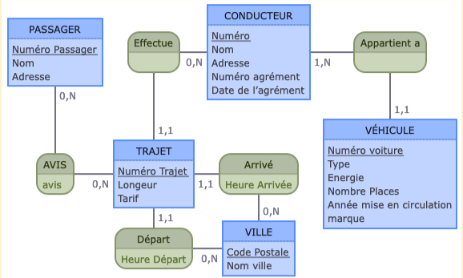

Mes Projets Scolaires
Pendant mes études, j'ai eu le privilège de participer à une multitude de projets variés, chacun représentant une opportunité unique de développer mes compétences et d'explorer de nouveaux domaines. Chaque projet a été méticuleusement planifié pour répondre à des objectifs spécifiques, en utilisant des approches et des méthodologies adaptées à chaque contexte. Grâce à ces expériences, j'ai acquis une solide compréhension des processus de conception, de développement et de gestion de projet. Chaque présentation de projet comprendra une description détaillée de ses objectifs, des méthodes utilisées, des résultats obtenus et des compétences que j'ai développées tout au long du processus. En partageant ces réalisations, j'espère mettre en lumière mon engagement envers l'excellence, ma capacité à collaborer efficacement en équipe et ma passion pour l'apprentissage continu. Ces projets représentent non seulement des jalons dans mon parcours académique, mais aussi des témoignages tangibles de ma détermination à relever les défis avec créativité et innovation. Je suis enthousiaste à l'idée de partager ces expériences avec vous et d'explorer comment elles peuvent contribuer à des opportunités futures.
-
1) Projet de developpement:
Titre du projet : Projet Final - Quadtree Objectif : Créer une représentation efficace d'un terrain infini pour le déplacement d'un personnage en utilisant des quadtrees. Le projet vise également à implémenter des fonctionnalités telles que la lecture de fichiers de terrain, la détection des entrées utilisateur et l'affichage en utilisant la bibliothèque Ebitengine. Fonctionnalités principales : Lecture de fichiers de terrain : Implémentation de fonctions pour lire un fichier représentant un terrain et le stocker en mémoire. Implémentation de quadtrees : Développement d'une bibliothèque pour la création et la manipulation de quadtrees pour stocker le terrain de manière compacte. Génération aléatoire de terrain : Ajout de la possibilité de générer aléatoirement un terrain d'une taille donnée. Interaction utilisateur : Détection des entrées utilisateur pour contrôler le déplacement du personnage sur le terrain. Affichage amélioré : Amélioration de l'affichage du terrain en utilisant des textures et des animations pour rendre l'environnement plus attrayant. Extensions : Possibilité d'implémenter des extensions facultatives telles que l'enregistrement de terrain, l'animation des décors, les téléporteurs, etc. Extensions possibles : Les extensions offrent une opportunité d'explorer des fonctionnalités plus avancées telles que la génération de terrain à la volée, la simulation de particules, l'optimisation des quadtrees, etc. En résumé, votre projet propose une approche complète pour la gestion et l'affichage d'un terrain de jeu, en mettant l'accent sur l'efficacité de stockage et la convivialité de l'interface utilisateur. Cela démontre une solide compréhension des structures de données et des concepts de développement de jeux.

-
2) Projet Site internet
Titre du Projet : Site de Boutique en ligne spécialisée dans la Vente de Vinyles Description : L'objectif de ce projet captivant était de concevoir une boutique en ligne dédiée à la vente de vinyles. En pleine ère numérique, la résonance nostalgique et la qualité sonore incomparable des vinyles attirent les passionnés de musique à travers le monde. Ce site web visait à offrir une expérience immersive et conviviale aux mélomanes, où ils pourraient découvrir et acquérir une large sélection de vinyles, qu'il s'agisse de classiques intemporels ou de découvertes musicales contemporaines. Dans le cadre de ce projet, nous avons mis l'accent sur une interface utilisateur soignée, intuitive et esthétiquement plaisante, facilitant la navigation et la recherche des vinyles. De plus, nous avons intégré des fonctionnalités de gestion de catalogue efficaces pour permettre aux administrateurs du site de gérer facilement les produits, les stocks et les commandes. Ce projet a été une occasion passionnante d'allier passion pour la musique et compétences en développement web, tout en créant une plateforme qui réunit les amateurs de vinyles et les artistes dans une expérience d'achat enrichissante et authentique.

-
3) Projet Site internet
Titre du Projet : Site de Boutique en ligne spécialisée dans la Vente de Vinyles Description : Dans le cadre des cours de communication web, ce projet a mis l'accent sur l'aspect esthétique du site plutôt que sur les aspects techniques. L'objectif était de concevoir une boutique en ligne dédiée à la vente de vinyles, offrant une expérience immersive et conviviale aux passionnés de musique.

-
4) Projet Base de donnée
Titre du Projet : Mise en Place d'une Base de Données pour un Service de Transport Description : Ce projet captivant représentait une plongée complète dans le monde de la gestion de bases de données, où nous avons entrepris la création d'une structure de données robuste et fonctionnelle pour un service de transport. De la conception initiale à l'implémentation finale, chaque étape a exigé une réflexion minutieuse et une planification méticuleuse. Nous avons commencé par analyser les besoins spécifiques du service de transport, en identifiant les entités clés telles que les véhicules, les itinéraires, les conducteurs et les passagers. Ensuite, nous avons élaboré un schéma de base de données efficace, en veillant à ce qu'il soit extensible, performant et conforme aux normes de sécurité et d'intégrité des données. L'implémentation de la base de données a été réalisée en utilisant des technologies modernes et des bonnes pratiques de développement. Ce projet a été une véritable opportunité d'appliquer nos connaissances théoriques à un contexte concret, tout en acquérant une expérience précieuse dans la conception et la gestion de bases de données. Il a démontré notre capacité à relever des défis techniques complexes et à livrer des solutions innovantes qui répondent aux besoins spécifiques de l'industrie du transport.
-
5) Projet PEIP Trader
Nous avons travaillé sur le développement de stratégies d'investissement dans les cryptomonnaies en utilisant des données historiques. En analysant ces données, nous avons identifié des schémas et des tendances du marché pour guider nos décisions d'investissement. Notre objectif est d'aider les investisseurs à prendre des décisions éclairées en utilisant ces analyses pour maximiser les opportunités de profit dans le domaine des cryptomonnaies.